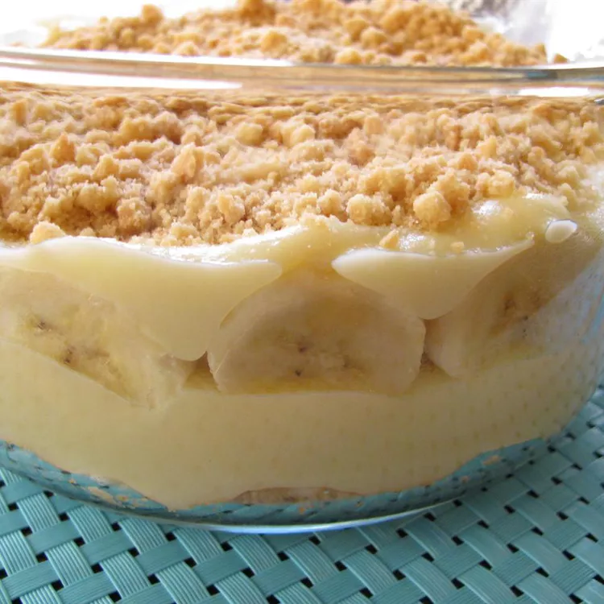

Banana Pudding

Description
This homemade banana pudding recipe from scratch was handed down from my grandmother. My whole family loves it and we all grew up on it. Hope you enjoy it!
Ingredients
2 tablespoons butter, softened
½ teaspoon vanilla extract
2 bananas, peeled and sliced
½ (12 ounce) package vanilla wafer cookies
Steps
1. Combine sugar, flour, and salt together in a medium saucepan. Add eggs and stir well. Stir in milk, and cook over low heat, stirring constantly.
2. When the mixture has thickened enough to coat the back of a metal spoon, remove from heat and continue to stir, cooling slightly. Stir in butter and vanilla until smooth.
3. Layer pudding with bananas and vanilla wafers in a serving dish. Chill at least 1 hour in the refrigerator before serving.